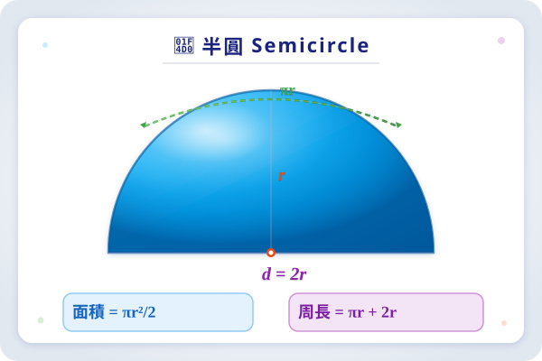
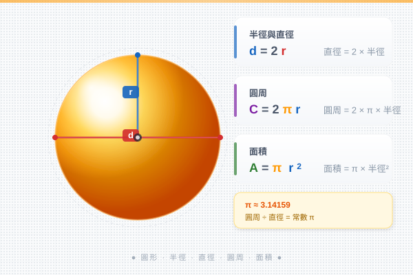
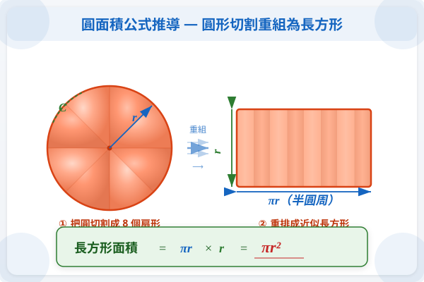

| # | 題目 | 答案 | 類型 |
|---|---|---|---|
| 1 | 圓的半徑是 7 cm，直徑是多少？ | ___ | manual |
| 2 | 圓的直徑是 10 cm，圓周是多少？（取 π = 3.14） | ___ | manual |
| 3 | 圓的半徑是 5 cm，圓面積是多少？（取 π = 3.14） | ___ | manual |
| 4 | 一個直角是多少度？一個周角是多少度？ | ___ | manual |
| 5 | 用量角器量度下面角的大小（課堂出示） | ___ | manual |
| Q1 | 要畫一個半徑 4 cm 的圓，圓規兩腳應相距多少 cm？ | ___ | manual |
| Q2 | 用圓規畫一個直徑 8 cm 的圓，圓規兩腳應相距多少？ | ___ | manual |
| Q3 | 在下面畫出一個半徑 2.5 cm 的圓（需標示圓心 O） | ___ | manual |
| Q4 | 半徑為 6 cm 的圓，它的圓周和圓面積各是多少？（π = 3.14） | ___ | manual |
| Q5 | 圓心角 60°，半徑 10 cm。求扇形面積。 | 314 | manual |
| Q6 | 圓心角 180°，半徑 8 cm。求弧長。 | ___ | manual |
| Q7 | 一個扇形的弧長是 9.42 cm，半徑是 6 cm。求圓心角。（π = 3.14） | 0.0942 | manual |
| Q8 | 一個扇形面積是 47.1 cm²，半徑 10 cm。求圓心角。 | 314 | manual |
| Q9 | 用圓規和直尺，嘗試將一個半徑 4 cm 的圓分成 6 等份。 | ___ | manual |
| Q10 | 連接 6 等分點中相間的 3 點，得到甚麼圖形？它的每邊長度是多少？ | 2 | manual |
| B1 | 圓規兩腳相距 5 cm，求所畫圓的直徑。 | ___ | manual |
| B2 | 圓心角 90°，半徑 8 cm。求扇形面積。（π = 3.14） | 200.96 | manual |
| B3 | 圓心角 45°，半徑 12 cm。求弧長。（π = 3.14） | ___ | manual |
| A1 | 一個扇形的圓心角是 72°，半徑 15 cm。求它的周界。（π = 3.14） | ___ | manual |
| A2 | 兩個扇形有相同半徑 10 cm。扇形A的圓心角 = 120°，扇形B的圓心角 = 150°。扇形B比扇形A的面積大多少？ | 314 | manual |
| A3 | 用圓規畫出一個半徑 3 cm 的圓，並在圓內標出一個 60° 的扇形。計算該扇形面積。 | 28.26 | manual |
| C1 | 一個鐘面（圓形），時針長 5 cm。時針從 3 點走到 5 點，時針尖端走過的弧長是多少？（π = 3.14） | ___ | manual |
| C2 | 一個圓的半徑是 R。一個扇形的圓心角是 72°，弧長等於圓周長的 15。驗證呢個關係。 | ___ | manual |
| C3 | 如圖，一個正方形內有一個扇形（圓心在正方形一個頂點，半徑 = 正方形邊長 10 cm）。求陰影（正方形減扇形）的面積。 | 100 | auto |
| E1 | 一個時鐘的分針長 10 cm，時針長 7 cm。從 12:00 到 12:30：(a) 分針尖端走了多少 cm？(b) 時針尖端走了多少 cm？哪個更長？ | ___ | manual |
| P1 | 一個圓形花圃半徑是 8 m。園丁要在花圃外圍建造一條環形小徑，小徑外圍的半徑是 10 m。求小徑的面積。 | ___ | manual |
| P2 | 一個扇形蛋糕的圓心角是 45°，半徑是 12 cm。求蛋糕的面積和弧長（外邊）。 | ___ | manual |
| P3 | 一個圓形操場的半徑是 30 m。小美沿操場邊緣走了 120° 的弧。她走了多少米？ | ___ | manual |
| P4 | 一個鐘面的半徑是 15 cm。時針從 2 點走到 6 點，時針掃過的扇形面積是多少？（π = 3.14） | ___ | manual |
| P5 | 用圓規在紙上畫出下面圖案：一個大半圓（半徑 5 cm）+ 兩個小半圓（半徑 2.5 cm，分別在大半圓的直徑兩端向外）。計算整個圖案的周界。 | ___ | manual |
| EC1 | 三個圓心角分別為 90°、120°、150° 的扇形拼成一個完整的圓嗎？驗證並解釋。 | ___ | manual |
| EC2 | 一個扇形的弧長正好等於它的半徑的長度。呢個扇形的圓心角是多少度？（答案取至整數，π = 3.14） | ___ | manual |
| H1 | 要畫一個直徑 14 cm 的圓，圓規兩腳應相距多少 cm？ | ___ | manual |
| H2 | 半徑 6 cm，圓心角 60°。求扇形面積。（π = 3.14） | 113.04 | manual |
| H3 | 半徑 9 cm，圓心角 40°。求弧長。（π = 3.14） | ___ | manual |
| H4 | 一個扇形的弧長是 6.28 cm，圓心角是 60°。求半徑。（π = 3.14） | ___ | manual |
| H5 | 用圓規畫一個半徑 4 cm 的圓，然後用同一半徑將圓周 6 等分。標出各分點。 | 25.12 | manual |
| H6 | 一個扇形的周界是 21.42 cm，半徑是 5 cm，圓心角是 120°。求弧長並驗證。（π = 3.14） | 0.2142 | manual |
| H7 | 一個鐘面的時針長 6 cm。從 9:00 到 11:00，時針尖端走過的弧長是多少？掃過的面積是多少？ | ___ | manual |
| H8 | 比較：(a) 半徑 10 cm、圓心角 36° 的扇形；(b) 半徑 6 cm、圓心角 100° 的扇形。哪個面積較大？ | 314 | manual |
霖楓學苑 · LF Academy · 自動答案生成器 v1.0 · 手動題目請老師覆核